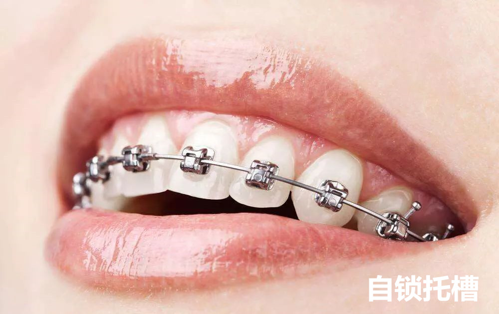
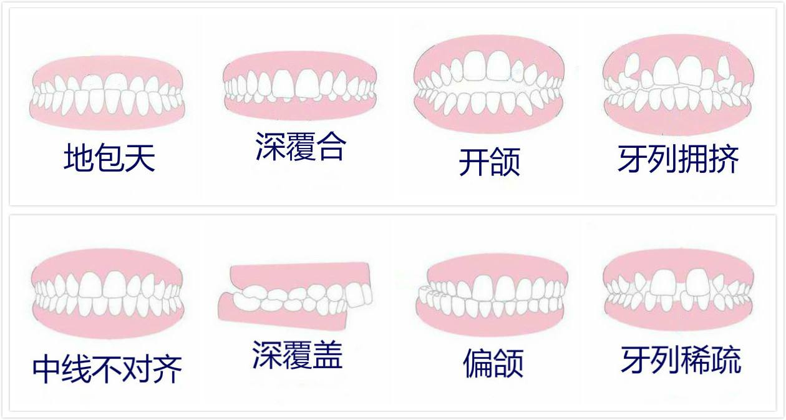
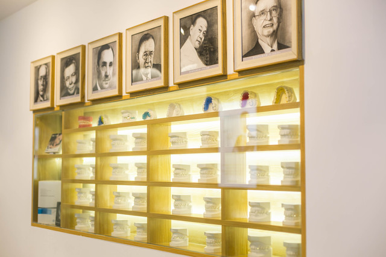

兼顾功能、颜面与微笑美学的系统矫治方案
牙齿矫正不仅是把牙齿排齐，更是对咬合功能、发音、清洁维护和面部协调度的综合改善。惠尔口腔围绕儿童早期干预、青少年固定矫治和成人隐形矫正，提供分阶段、个性化的正畸评估与治疗设计。
结合面型分析、咬合关系判断与治疗目标沟通，我们帮助患者明确“为什么需要矫正、适合哪种方式、治疗周期多久、配合重点是什么”，让矫正方案更清晰，也更可执行。
不同年龄阶段，关注点各不相同



专注口腔正畸、颜面管理与数字化矫治，擅长结合功能与美学目标，为青少年及成人患者制定系统矫治路径。
更侧重儿童早期矫治、颌面发育引导与换牙期问题评估，适合早期干预方向患者。